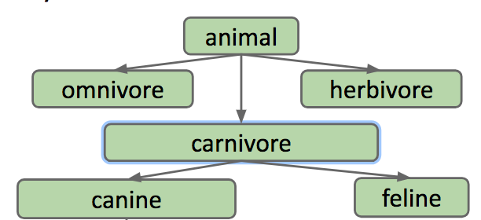
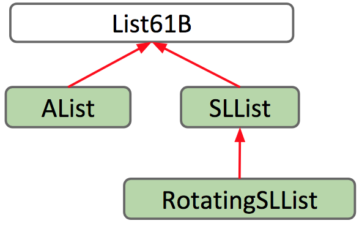

Chapter3 OOP in Java
Inheritance, Implements¶
Recall the two list classes we created before: SLList and AList, we may notice that they are very similar. In fact, all of their supporting methods are the same!
Let's introduce overloading first. overloading allows Java to choose which one to run according to what kind of parameter we supply it. It's nice that Java is smart enough to know how to deal with two of the same methods for different types, but overloading has several downsides:
- It's super repetitive and ugly, because you now have two virtually identical blocks of code.
- It's more code to maintain, meaning if we want to make a small change to the method, such as correcting a bug, we need to change it in all of the overloaded methd.
- If we want to make more list types, we would have to copy the method for every new list class.
Hypernyms（上位词）, Hyponyms（下义词）, and Interface Inheritance¶
In the English language and life in general, there exist logical hierarchies to words and objects.
Dog is what is called a hypernym of poodle, malamute, husky, etc. In the reverse direction, poodle, malamute, and husky, are hyponyms of dog.
These words form a hierarchy of "is-a" relationships: a poodle "is-a" dog, a dog "is-a" canine, a canine "is-a" carnivore, a carnivore "is-an" animal.

The same hierarchy goes for SLLists and ALists! SLList and AList are both hyponyms of a more general list. We will formalize this relationship in Java: if a SLList is a hyponym of List61B, then the SLList class is a subclass of the List61B class and the List61B class is a superclass of the SLList class.
In Java, in order to express this hierarchy, we need to do two things:
- Define a type for the general list hypernym
- Specify tat SLList and AList are hyponyms of that type
There are two kinds of hierarchies like this, Interface inheritance and Implementation inheritance.
Interface inheritance¶
Interface Inheritance refers to a relationship in which a subclass inherits all the methods/behaviors of the superclass. The interface includes all the method signatures, but not implementations. It's up to the subclass to actually provide those implementations.
The new class List61B is what Java calls an interface. It is essentially a contract that specifies what a list must be able to do, but it doesn't provide any implementation for those behaviors. Here is our List61B interface. At this point, we have satisfied the first step in establishing the relationship hierarchy: creating a hypernym.
public interface List61B<Item> {
public void addFirst(Item x);
public void add Last(Item y);
public Item getFirst();
public Item getLast();
public Item removeLast();
public Item get(int i);
public void insert(Item x, int position);
public int size();
}
注意
需要注意的是，接口 interface 不是类，其只能包含常量和抽象方法，不包含具体实现，是“行为规范”的抽象
To complete step2, we need to specify that AList and SLList are hyponyms of the List61B class. In Java, we define this relationship in the class definitions by using the realtionship-defining word implements
implements List61B<Item> is essentially a promise.
Overriding¶
When implementing the required functions in the subclass, it's useful to include the @Override tag right on the top of the method signature. For instance,
Even if we don't include this tag, we are still overriding the method. So technically, we don't have to include it. However, including the tag acts as a safeguard for us by alerting the compiler that we intend to override this method.
default keyword¶
Previously, we had an interface List61B that only had method headers identifying what List61B's should to. But now, we will see that we can actually write methods in List61B that already have their implementations filled out. These methods identify how hypernyms of List61B should behave.
In order to do this, we must include the default keyword in the method signature. For instance,
default public void print(){
for(int i = 0; i < size(); i += 1){
System.out.print(get(i) + " ");
}
System.out.println();
}
Then everything that implements the List61B class can use the method.
However, the general print method for SLList is very slow cause the get method needs to jump through the entirety of the list. So we want SLList to print a different way than the way specified in its interface. Such as, to just print while jumping through. To do this, we need to override it.
@Override
public void print(){
for(Node p = sentinel.next; p != null; p = p.next){
System.out.print(p.item + "");
}
}
Now, whenever we call print() on an SLList, it will call this method instead of the one in List61B.
Implementation Inheritance¶
Implementation Inheritance(class inheritance) uses the extends keyword.
Extends chapter.
GRoE¶
Let's try to apply the Golden Rule of Equals we introduced in the first chapter to subclass and superclass.
whenever we make an assignment a=b，we copy the bits from b into a, which requires that b is the same type as a, we can't assign Dog b = 1 or Dog b = new Cat() because they are not the same type.
What's more, the relationship between superclass and subclass is "is-a",so we can make assignment.
Consider the code below, will it compile successfully?
public static void main(String[] args){
List61B<String> someList = new SLList<String>();
SomeList.addFirst("elk");
}
Actually, it will compile, though someList is declared as List61B type, but its dynamic type is SLList，so the statement SomeList.addFirst("elk") will actually call the method addFirst overridden in SLList.
Static type and Dynamic type¶
But how does Java know which print() to call. Actually, Java is able to do this due to something called dynamic method selection.
Consider the code List61B<String> lst = new SLList<String>(). lst is of type "List61B", which is called the "static type". However, the objects themselves is intrinsically（本质上地） an SLList, it is also a List61B, because of the "is-a" relationship. But, because the object itself instantiated using the SLList constructor, we call this its "dynamic type".
When Java runs a method that is overridden, it searches for the appropriate method signature in it's dynamic type and runs it.
注意
This does not work for overloaded methods!
The only distinction between two overloaded methods is the types of the parameters. When Java checks to see which method to call, it checks the static type and calls the method with the parameter of the same type.
For instance, if there are two methods in the same class
public static void peek(List61B<String> list){
System.out.println(list.getLast());
}
public static void peek(SLList<String> list){
System.out.println(list.getFirst());
}
and we run this code
SLList<String> SP = new SLList<String>();
List61B<String> LP = SP;
SP.addLast("elk");
SP.addLast("are");
SP.addLast("cool");
peek(SP);
peek(LP);
The first call to peek() will use the second peek method that takes in an SLList. The second call to peek() will use the first peek method which takes in a List61B.
Finally, Implementation inheritance may sound nice and all but there are some drawbacks:
- We are fallible humans, and we can't keep track of everything, so it's possible that you override a method but forgot you did.
- It may be hard to resolve conflicts in case two interfaces give conflicting default methods.
- It encourages overly complex code.
Extends(继承), Casting（类型转换）, Higher Order Functions（高阶函数）¶
Extends¶
Now we've seen how we can use the implements keyword to define a hierarchical relationship with interfaces(implements 建立的是类与接口的层级关系). What if we wanted to define a hierarchical relationship between classes（我们希望在类与类之间定义层级关系）? This is called Implementation Inheritance.
Suppose we want to build a RotatingSLList that has the same functionality as the SLList like addFirst, size and so on, but with an additional rotateRight operation to bring the last item to the front of the list. One way we could do this would be to copy and paste all the methods from SLList and write rotateRight on top of it all - but then we would't be taking advantage of the power of inheritance! Remember that inheritance allows subclasses to reuse code from an already defined class. So we have the idea to define our RotatingSLList class to inherit from SLList.
We can set up this inheritance relationship in the class header, using the extends keyword like so:
注意
注意我们这里不能将 SLList 设置为 interface 然后使用 implements 关键字，因为我们是希望复用 SLList 的代码，而 interface 只是一个接口，或者说是一种规范，而不是直接“继承”实现
In the same way that AList shares an "is-a" relationship with List61B, RotatingSLList shares an "is-a" relationship with SLList. The extends keyword lets us keep the original functionality of SLList, while enabling us to make modifications and add additional functionality. The relationships are as belows:

To define the rotateRight method, we can use the method of RoatatingSLList's superclass--SLList. Here's what we came up with:
Actually, we use the methods defined outside of RotatingSLList, because we use the extends keyword to inherit them from SLList. Then it gives rise to the question: What exactly do we inherit?
By using the extends keyword, subclasses inherit all members of the parent class. "Members" includes:
- All instance and static variables
- All methods
- All nested classes
Note that constructors are not inherited, and private members cannot be directly accessed by subclasses, which is similar to that in C++.
VengefulSLList¶
Notice that when someone calls removeLast on an SLList, it throws that value away. But what if we wanted those removed values left. In this case, we need to remember what those removed value.
Thus, we create a new class, VengefulSLList, which remembers all items that have been banished by removeLast. Like before, we specify in VengefulSLList's class header that it should inherit from SLList.
Now, let's give VengefulSLList a method to print out all of the items that have been removed by a call to the removeLast method, printLostItems(). We can do this by adding an instance variable that can keep track of all the deleted items. If we use an SLList to keep track of our items, then we can simply make a call to the print() method to print out all the items. So far we have:
public class VengefulSLList<Item> extends SLList<Item>{
SLList<Item> deletedItems;
public void printLostItems(){
deletedItems.print();
}
}
Based on the removeLast of SLList, the one of VengefulSLList should have an additional operation - adding the removed item to the deletedItems list. In an effort to reuse code, we can override the removeLast method to modify it to fit our needs, and call the removeLast method defined in SLList(which is super class) by using the super keyword.
public class VengefulSLList<Item> extends SLList<Item>{
SLList<Item> deletedItems;
public VengefulSLList(){
deletedItems = new SLList<Item>();
}
@Override
public Item removeLast(){
Item x = super.removeLast();
deletedItems.addLast(x);
return x;
}
public void printLostItems(){
deletedItems.print();
}
}
Constructors in inheritance¶
As we mentioned above, subclasses inherit all members of the parent class, which includes instance and static variables, methods, and nested classes, but does not include constructors.
While constructors are not inherited, Java requires that the constructor of subclass must start with a call to one of its superclass's constructors（指的是父类众多构造函数中的某个）
To gain some intuition on why that it is, recall that the extends keywords defines an "is-a" relationship between a subclass and a parent class. If a vengefulSLList "is-an" SLList, then it follows that every VengefulSLList must be set up like an SLList, and a SLList must be created. Then, that SLList can be given the qualities of a VengefulSLList. It doesn't make sense for a VengefulSLList to be constructed without first creating a SSList first.
We can either explicitly make a call to the superclass's constructor, using the super keyword:
Or if we choose not to, Java will automatically make a call to the superclass's no-argument constructor for us. In this case, adding super() has no difference from the constructor we wrote before. It just makes explicit what was done implicitly by Java before. However, if we were to define another constructor in VengefulSLList, such as a constructor with argument, Java's implicit call may not be what we intend to call.
Suppose we had a one-argument constructor that took in an item. If we had relied on an implicit call to the superclass's no-argument constructor, super(), the item passed in as an argument wouldn't be placed anywhere. So we must make an explicit call to the correct constructor by passing in the item as a parameter to super.
The Object Class¶
Every class in Java is a descendant of the Object class, or extends the Object class. Even classes that do not have an explicit extends in their class still implicitly extend the Object class.
For example,
- VengefulSLList extends SLList explicitly in its class declaration
- SLList extends Object implicitly
This means that SLList inherits all members of Object, VengefulSLList inherits all members of SLList and Object transitively.
The Object class provides operations that every Object should be able to do-like .equals(Object obj),.hashCode() and toString().
Encapsulation（封装）¶
Encapsulation is one of the fundamental principles of object oriented programming, and is one of the approaches that we take as programmers to resist our biggest enemy: complexity. Managing complexity is one of the major challenges we must face when writing large programs.
Hiding information that others don't need is a fundamental approach when managing a large system. The root of encapsulation lies in this notion of hiding information from the outside. In computer science terms, a module can be defined as a set of methods that work together as a whole to perform a task or set of related tasks. If the implementation details of a module are kept internally hidden and the only way to interact with it is through a documented interface, then that module is said to be encapsulated.
Take the ArrayDeque class for example, this outside world is able to utilize and interact with an ArrayDeque through its defined methods, like addLast and removeLast. However, they do not need to understand the complex details of how the data structure was implemented in order to be able to use it effectively.
Java makes it easy to enforce abstraction barriers. Using the private keyword in Java, it becomes virtually impossible to look inside an object - ensuring that the underlying complexity isn't exposed to the outside world.
How Inheritance Breaks Encapsulation¶
Actually, inheritance may break encapsulation, because the subclass may depend on the implementation details of the superclass, instead of depending only on its public interface, which finally breaks encapsulation.
Suppose we had the following two methods in a Dog class, we may implement bark and barkMany like so:
public void bark(){
System.out.println("bark");
}
public void barkMany(int N){
for(int i = 0; i < N; i += 1){
bark();
}
}
Or, alternatively, we could have implemented it like so:
public void bark(){
barkMany(1);
}
public void barkMany(int n){
for(int i = 0; i < n; i += 1){
System.out.println("bark");
}
}
From a user's perspective, the functionality of either of these implementations is exactly the same.
However, what if we were to define a subclass of Dog called VerboseDog, and override its barkMany method as such:
@Override
public void Many(int N){
System.out.println("As a dog, I say: ");
for(int i = 0; i < N; i += 1){
bark();
}
}
Considered that we were given a VerboseDog vd, and call vd.barkMany(3),for the first implementation of bark() and barkMany, the output is As a dog, I say: bark bark bark. While using the second implementation, the program gets caught in an infinite loop.
Tip
在第二个实现中，bark() 方法依赖于 barkMany() 方法，将父类的内部实现细节暴露给了子类，并且过度依赖可能被重写的方法，破坏了封装性。
Type Checking¶
Dynamic method lookup is the process of determining the method that is executed at runtime based on the dynamic type of the object. Specifically, if a method in SLList is overridden by the VengefulSLList class, then the method that is called at runtime is determined by the run-time type, or dynamic type, of that variable.
In Java, the compiler's type checking is a core mechanism to ensure code safety, with rules centered around static types(compile-time types). There are mainly two rules:
1. Method Invocation Check（方法调用的合法性检查）:The compiler only allows calling methods declared in the static type of the variable, even if the actual object(dynamic type) referenced by the variable contains the method, the compilation will fail if the static type does not define it.（编译器仅允许调用静态类型中已经声明的方法，只要静态类型中没有定义，编译就会报错）
List61B<String> list = new SLList<>();
list.addFirst("a"); // addFirst()在 List61B 接口中声明，合法
list.set(0,"b"); // 如果 set() 是 SLList 独有的方法，未在 List61B 中声明，则编译器无法识别
// 因为编译器仅允许调用静态类型中已经声明的方法
2. Assignment Compatibility Check（赋值操作的类型兼容性检查）: The assignment a = b is valid only if the static type of b is a subtype of(or the same as) the static type of a（赋值操作 a=b 必须满足：b的静态类型是a的静态类型的子类型（或类型相同），也即符合"is-a"关系，否则编译会报错）
// Valid Examples,subtype assignment
Animal animal = new Dog();
List61B<Integer> list = new AList<>();
// Invalid Examples
Dog dog = new Animal();
SLList<String> sList = new List61B<>();
Compiler cannot predict the dynamic type (runtime type) of a variable during compilation. It checks only based on the declared static type. This ensures obvious type mismatches are caught before runtime.
Casting¶
Suppose we have this method
and we have the code below:
Poodle frank = new Poodle("Frank",5);
Poodle frankJr = new Poodle("Frank Jr.",15);
Poodle largerDog = maxDog(frank,frankJr);
It will not compile cause we are trying to assign a Dog object to a Poodle variable. A Poodle "is-a" Dog, but a more general Dog object may not always be a Poodle, even if it clearly is to you and me(cause we know that frank and frankJr are both Poodles). So is there any way around this, when we know for certain that assignment would work? The answer is Casting!
Java has a special syntax where we can tell the compiler that a specific expression has a special compile-time type. This is called "casting". With casting, we can tell the compiler to view an expression as a different compile-time type.
Casting does not have any lasting effect. In other words, it does not change the static type of the variable, but tell the compiler to consider its static type as the casting type temporarily.
Since we know that frank and frankJr are both Poodles, we can cast:
注意
Note that Casting is a powerful but dangerous tool. Essentially, casting is telling the compiler not to do its type-checking duties, telling it to trust us and act the way we want it to.
For instance,
Poodle frank = new Poodle("Frank",5);
Malamute frankSr = new Malamute("Frank Sr.",100);
Poodle largerPoodle = (Poodle) maxDog(frank,frankSr); // runtime exception
With casting, casting allows this code to pass, and when maxDog returns the Malamute at runtime, and we try casting a Malamute as a Poodle, we run into a runtime exception - a ClassCastException.
Higher Order Functions（高阶函数）¶
Higher order function is a function that treats other functions as data. For example, take this Python program do_twice that takes in another functions as input, and applies it to the input x twice.
A call to print(do_twice(tenX,2)) would apply tenX to 2, and apply tenX again to its result, 20, resulting in 200. How would we do something like this in Java?
In old school Java (Java7 and earlier), memory boxes (variables) could not contain pointers to functions, which means we could not write a function that has a "Function" type, as there was simply no type for functions.
To get around this we can take advantage of interface inheritance. Let's write an interface that defines any function that takes in an integer and returns an integer - an IntUnaryFunction.
Now we can write a class which implements IntUnaryFunction to represent a concrete function. Let's make a function that takes in an integer and returns 10 times that integer.
Now let's write do_twice now
A call to print(do_twice(tenX,2)) in Java would look like this:
Subtype Polymorphism vs. HoFs(高阶函数)¶
Subtype Polymorphism¶
Polymorphism, as its core, means 'many forms'. In Java, polymorphism refers to how objects can have many forms of types. In OOP, polymorphism relates to how an object can be regarded as an instance of its own class, an instance of its superclass, an instance of its superclass's superclass, and so on.
Consider a variable deque of static type Deque. A call to deque.addFirst() will be determined at the time of execution, depending on the run-time type, or dynamic type, of deque when addFirst is called. As we saw in the last chapter, Java picks which method to call using dynamic method selection.
Suppose we want to write a python program that prints a string representation of the larger of two objects. There are two approaches to this.
- Explicit HoF Approach
- Subtype Polymorphism Approach
Using the explicit higher order function approach, we have a common way to print out the larger of two objects. In contrast, in the subtype polymorphism approach, the object itself makes the choices. The largerFunction that is called is dependent on what x and y actually are.
Tip
最后一句话的意思是说，当调用 x.largerThan(y) 这样的方法时，具体执行哪个类的 largerThan 实现，取决于 x 和 y 在执行时的实际类型（动态类型），而非编译时的静态类型。比如，如果 x 是 Dog 类实例，就执行 Dog 类的 largerThan 方法；若 x 是 Cat 类实例，就执行 Cat 类的 largerThan 方法
Max Function¶
Suppose that we want to write a max function which takes in any array - regardless of type - and returns the maximum item in the array. A "silly" solution is that we may define its own max function for any class, which results in unnecessary repeated work and a lot of redundant code.
The fundamental issue that gives rise to this is that Objects cannot be compared with >. So we have to make a rule that how Objects compare with each other. In Python or C++, the way that the > operator works could be redefined to work in different ways when applied to different types(Overloaded operators). Unfortunately, Java does not have this capability. Instead, we turn into interface inheritance to help us out.
We can create an interface that guarantees that any implementing class, like Dog, contains a comparison method, which we'll call compareTo, telling all the classes that "You have to offer a method to compare two Objects".
public interface OurComparable{
public int compareTo(Object o);
// The compareTo method
// return -1 if this < 0
// return 0 if this equals 0
// return 1 if this > 0
}
After that, we can require that our Dog class implements the compareTo method. We use the instance variable size to make our comparison.
public class Dog implements OurComparable{
private String name;
private int size;
public Dog(String n, int s){
name = n;
size = s;
}
public void bark(){
System.out.println(name + " says:bark");
}
public int compareTo(Object o){
Dog uddaDog = (Dog) o; // 为了使用 Dog 类特有的 size 进行比较，必须先将传入的 Object 参数强制转换为 Dog 类型，这样才能访问其 size 变量，否则会出现编译时错误
if(this.size < uddaDog.size){
return -1;
}else if(this.size == uddaDog.size){
return 0;
}
return 1;
}
}
Also, We can also make it much more succinct in this way:
Now we can generalize the max function, instead of taking in any arbitrary array of objects, takes in OurComparable objects - which we know for certain all have the compareTo method implemented, so that we do not need to care about the specific type of the objects.
public static OurComparable max(OurComparable[] items){
int maxDex = 0;
for(int i = 0; i < items.length; i += 1){
int cmp = items[i].compareTo(items[maxDex]);
if(cmp > 0){
maxDex = i;
}
}
return items[maxDex];
}
Using inheritance, we were able to generalize our maximization function. What are the benefits to this approach?
- No need for maximization code in every class.
- We have code that operates on multiple types gracefully
Comparables¶
The OurComparable interface that we just built can work, but it's not perfect. Here are some issues with it:
- Awkward casting to/from Objects
- We made it up. No existing classes implement OurComparable and no existing classes use OurComparable.
Then what's the solution? We'll take advantage of an interface that already exists called Comparable. Comparable is already defined by Java and is used by countless libraries.
Comparable looks very similar to the OurComparable interface we made, but with one main difference.
public interface Comparable<T>{
public int compareTo(T obj);
}
public interface OurComparable{
public int compareTo(Object obj);
}
Notice that Comparable<T> means that it takes a generic type. This will help us avoid having to cast an object to a specific type! Now, we will rewrite the Dog class to implement the Comparable interface, being sure to update the generic type T to Dog:
public class Dog implements Comparable<Dog>{
...
public int compareTo(Dog uddaDog){
return this.size - uddaDog.size;
}
}
And change each instance of OurComparable in the Maximizer class to Comparable.
Instead of using our personally created interface OurComparable, we now use the real, built-in interface, Comparable. As a result, we can take advantage of all the libraries that already exist and use Comparable.
Comparator¶
We've just learned about the Comparable interface, which imbeds into each Dog the ability to compare itself to another Dog. Now, we will introduce a new interface that looks very similar called Comparator.
Some terminology（术语）:
- Natural order - used to refer to the ordering implied in the
compareTomethod of a particular class. For instance, the natural ordering of Dogs is defined according to the value of size.
So what if we want to sort Dogs in a different way than their natural ordering, such as by alphabetical order of their name?
Java's way of doing this is by using Comparator. Since a comparator is an object, the way we'll use Comparator is by writing a nested class inside Dog that implements the Comparator interface.
So let's introduce what's inside this interface:
This shows that the Comparator interface requires that any implementing class implements the compare method. The rule of compare is just like compareTo:
- return negative number if o1<o2
- return 0 if o1 equals o2
- return positive number if o1>o2
Now let's give Dog a NameComparator, we can use String's already defined compareTo method.
import java.util.Comparator;
public class Dog implements Comparable<Dog>{
...
public int compareTo(Dog uddaDog){
return this.size - uddaDog.size;
}
// 我们在 Dog 类中定义 NameComparator 内部类
private static class NameComparator implements Comparator<Dog>{
public int compare(Dog a, Dog b){
return a.name.compareTo(b.name);
}
}
public static Comparator<Dog> getNameComparator(){
return new NameComparator();
}
}
Note that we've declared NameComparator to be a static class, we do so because we do not need to instantiate a Dog to get a NameComparator.
We can retrieve our NameComparator like so:
Exceptions, Iterators, Object Methods¶
Lists, Sets, and ArraySet¶
In this section we will learn about how to use Java's built in List and Set data structures as well as build our own ArraySet.
Lists in Real Java Code¶
In the previous lecture, we built a list from scratch, but Java actually provides a built-in List interface and several implementations, e.g. ArrayList. Note that List is just an interface so that we can't instantiate it! We should instantiate one of its implementations.
To access this, we can use the full name or canonical name in terms of classes, interfaces:
java.util.List<Integer> L = new java.util.ArrayList<>();
// 这里 java.util.List 是一个接口，而 java.util.ArrayList 是 List 接口的实现类
However this is a bit verbose. In a similar way to how we import Junit, we can import java libraries:
import java.util.List;
import java.util.ArrayList;
public class Example{
public static void main(String[] args){
List<Integer> L = new ArrayList<>(); // via import statement we can just use List and ArrayList
L.add(5);
L.add(10);
System.out.println(L);
}
}
Sets¶
Sets are a collection of unique elements - we can only have one copy of each element. There is also no sense of order.
Java has the Set interface along with implementations, e.g. HashSet. Remember to import them if we don't want to use the full name, for instance:
Example use is as follows:
Set<String> s = new HashSet<>();
s.add("Tokyo");
s.add("Lagos");
System.out.println(S.contains("Tokyo")); // true
ArraySet¶
Our goal is to make our own set, ArraySet, with the following methods:
add(value): add the value to the set if not already presentcontains(value): check to see if ArraySet contains the keysize(): return number of values
The implementation in the lecture is as follows:
import java.util.Iterator;
public class ArraySet<T> implements Iterable<T>{ // 这里实现的是 Iterable
private T[] items;
private int size;
public ArraySet(){
items = (T[]) new Object[100];
size = 0;
}
public boolean contains(T x){
for(int i = 0; i < size; i += 1){
if(items[i].equals(x)){
return true;
}
}
return false;
}
public void add(T x){
if(contains(x)){
return;
}
items[size] = x;
size += 1;
}
public int size(){
return size;
}
}
Throwing Exceptions¶
Our ArraySet implementation from the previous section has an error. When we add null to our ArraySet, we get a NullPointerException.
The problem lies in the contains method where we check items[i].equals(x). If the value at items[i] is null, then we are calling null.equals(x), which results in error NullPointerException.
Exceptions cause normal flow of control to stop. We can in fact choose to throw our own exceptions. In Java, Exceptions are objects and we throw exceptions using the following format:
Let's throw an exception when a user tries to add null to our ArraySet. We'll throw an IllegalArgumentException which takes in one parameter(a String message). So our updated add method may be as follows:
public void add(T x){
if(x == null){
throw new IllegalArgumentException("can't add null");
}
if(contains(x)){
return;
}
items[size] = x;
size += 1;
}
So why is this better? There are two reasons:
- We have control of our code: we consciously decide at what point to stop the flow of our program
- More useful Exception type and helpful error message for those using our code.
However, it would be better if the program doesn't crash at all. There are different things that we could do in this case, here are some below:
- Don't add
nullto the array if it is passed intoaddmethod. - Change the
containsmethod to account for the case ifitems[i]==null
Whatever you decide, it is important that users know what to expect. That is why documentation(such as comments about your methods) is very important.
Iteration¶
In Java, when we need to do iteration, we can use a clean enhanced for loop with Java's HashSet
Set<String> s = new HashSet<>();
s.add("Tokyo");
s.add("Lagos");
for(String city : s){
System.out.println(city);
}
However, if we try to do the same with our ArraySet, we get an error.(这是因为 for each loop 本质上是通过迭代器 Iterator 来实现的，编译器会将其转换为使用迭代器的代码，而我们的 ArraySet 并没有实现 Iterable 接口，也就没有提供 iterator() 方法来返回迭代器，故无法使用 for each loop) How can we enable this functionality?
Enhanced For Loop¶
First, Let's talk about what is happening when we use an enhanced for loop. We can "translate" an enhanced for loop into an ugly, manual approach.
The above code translates to:
Set<String> s = new HashSet<>();
...
Iterator<String> seer = s.iterator();
while(seer.hasNext()){
String city = seer.next();
...
}
Then let us strip away the magic.
The key here is an object called an iterator. For our example, in List.java we might define an iterator() method that returns an iterator object.
Now, we can use that object to loop through all the entries in our list:
List<Integer> friends = new ArrayList<Integer>();
...
Iterator<Integer> seer = friends.iterator();
while(seer.hasNext()){
System.out.println(seer.next());
}
There are three key methods in our iterator approach:
First, we get a new iterator object with Iterator<Integer> seer = friends.iterator(). Next, we loop through the list with our while loop. Check that whether there are still items left with seer.hasNext(), which will return true if there are unseen items remaining, and false if all items have been processed. Last, seer.next() does two things at once. It returns the next element of the list, and here we print it out. It also advances the iterator by one item. In this way, the iterator will only inspect each item once.
Implementing Iterators¶
In this section, we are going to talk about how to build a class to support iteration.
Think about what the compiler need to know in order to successfully compile the following example:
List<Integer> friends = new ArrayList<Integer>();
Iterator<Integer> seer = friends.iterator();
while(seer.hasNext()){
System.out.println(seer.next());
}
friends is a List, on which iterator() is called, so we have to ask:
- Does the List interface have an
iterator()method?
And seer is an iterator, on which hasNext() and next() are called, so we have to ask:
- Does the Iterator have
nextandhasNext()methods?
So how do we implement these requirements?
To understand it, we can think of that the List interface extends the Iterable interface, inheriting the abstract iterator() method.(Actually, List extends Collection which extends Iterable)
public interface Iterable<T>{
Iterator<T> interator();
}
public interface List<T> extends Iterable<T>{
...
}
Next, the compiler checks that Iterators have hasNext() and next(). The Iterator interface specifies these abstract methods explicitly:
Specific classes will implement their own iteration behaviors for the interface methods. Let's look at an example.
We are going to add iteration through keys to our ArrayMap class. First, we write a new class called ArraySetlterator, nested inside of ArraySet:
private class ArraySetIterator implements Iterator<T>{
private int wizPos;
public ArraySetIterator(){
WizPos = 0;
}
public boolean hasNext(){
return wizPos < size;
}
public T next(){
T returnItem = items[wizPos];
wizPos += 1;
return returnItem;
}
}
This ArraySetIterator implements a hasNext() method and a next() method, using a wizPos position as an index to keep track of its position in the array. For a different data structure, we might implement these two methods differently.
Now that we have the appropriate methods, we could use a ArraySetIterator to iterate through an ArrayMap:
ArraySet<Integer> aset = new ArraySet<>();
aset.add(5);
aset.add(23);
aset.add(42);
Iterator<Integer> iter = aset.iterator();
while(iter.hasNext()) {
System.out.println(iter.next());
}
But we still want to be able to support the enhanced for loop(for each loop), to make our calls cleaner. So, we need to make ArrayMap implement the Iterable interface. The essential method of the Iterable interface is iterator(), which returns an Iterator object for that class. All we have to do is return an instance of our ArraySetInterator that we just wrote.
Now we can use enhanced for loops with our ArraySet
Here we've seen Iterable, the interface that makes a class able to be iterated on, and requires the method iterator(), which returns an Iterator object. And we've seen Iterator, the interface that defines the object with methods to actually do that iteration. You can think of an Iterator as a machine that you put onto an iterable that facilitates the iteration. Any iterable is the object on which the iterator is performing.
With these two components, we can make fancy for loops for your classes! ArraySet code with iteration support is below:
import java.util.Iterator;
public class ArraySet<T> implements Iterable<T> {
private T[] items;
private int size; // the next item to be added will be at position size
public ArraySet() {
items = (T[]) new Object[100];
size = 0;
}
/* Returns true if this map contains a mapping for the specified key.
*/
public boolean contains(T x) {
for (int i = 0; i < size; i += 1) {
if (items[i].equals(x)) {
return true;
}
}
return false;
}
/* Associates the specified value with the specified key in this map.
Throws an IllegalArgumentException if the key is null. */
public void add(T x) {
if (x == null) {
throw new IllegalArgumentException("can't add null");
}
if (contains(x)) {
return;
}
items[size] = x;
size += 1;
}
/* Returns the number of key-value mappings in this map. */
public int size() {
return size;
}
/** returns an iterator (a.k.a. seer) into ME */
public Iterator<T> iterator() {
return new ArraySetIterator();
}
private class ArraySetIterator implements Iterator<T> {
private int wizPos;
public ArraySetIterator() {
wizPos = 0;
}
public boolean hasNext() {
return wizPos < size;
}
public T next() {
T returnItem = items[wizPos];
wizPos += 1;
return returnItem;
}
}
public static void main(String[] args) {
ArraySet<Integer> aset = new ArraySet<>();
aset.add(5);
aset.add(23);
aset.add(42);
//iteration
for (int i : aset) {
System.out.println(i);
}
}
}
Object Methods¶
All classes inherit from the overarching（首要的，支配一切的） Object class. The methods that are inherited are as follows:
String toString()boolean equals(Object obj)Class<?> getClass()int hashCode()protected Objectclone()protected void finalize()void notify()void notifyAll()void wait()void wait(long timeout)void wait(long timeout, int nanos)
We are going to focus on the first two in this chapter. We will take advantages of inheritance to override these two methods in our classes to behave in the ways we want them to.
toString()¶
The toString() method provides a string representation of an object. The System.out.println() function implicitly calls this method on whatever object is passed to it and prints the string returned. In other words, when we run System.out.println(dog), it is actually doing this:
The default object class 's toString() methods returns the location of the object in memory in the form of a hexadecimal string. Classes like ArrayList and Java arrays have their own overriden versions of the toString() method. That is why, when we were working with and writing tests for ArrayList, errors would always return the list in a nice format like (1,2,3,4), instead of returning the memory location.
For classes that we've written by ourselves like ArrayDeque,LinkedListDeque, etc, we need to provide our own toString() method if we want to be able to see the objects printed in a readable format.
Let's try to write this method for an ArraySet class.
import java.util.Iterator;
public class ArraySet<T> implements Iterable<T> {
private T[] items;
private int size; // the next item to be added will be at position size
public ArraySet() {
items = (T[]) new Object[100];
size = 0;
}
/* Returns true if this map contains a mapping for the specified key.
*/
public boolean contains(T x) {
for (int i = 0; i < size; i += 1) {
if (items[i].equals(x)) {
return true;
}
}
return false;
}
/* Associates the specified value with the specified key in this map.
Throws an IllegalArgumentException if the key is null. */
public void add(T x) {
if (x == null) {
throw new IllegalArgumentException("can't add null");
}
if (contains(x)) {
return;
}
items[size] = x;
size += 1;
}
/* Returns the number of key-value mappings in this map. */
public int size() {
return size;
}
/** returns an iterator (a.k.a. seer) into ME */
public Iterator<T> iterator() {
return new ArraySetIterator();
}
private class ArraySetIterator implements Iterator<T> {
private int wizPos;
public ArraySetIterator() {
wizPos = 0;
}
public boolean hasNext() {
return wizPos < size;
}
public T next() {
T returnItem = items[wizPos];
wizPos += 1;
return returnItem;
}
}
@Override
public String toString() {
/* hmmm */
}
@Override
public boolean equals(Object other) {
/* hmmm */
}
public static void main(String[] args) {
ArraySet<Integer> aset = new ArraySet<>();
aset.add(5);
aset.add(23);
aset.add(42);
//iteration
for (int i : aset) {
System.out.println(i);
}
//toString
System.out.println(aset);
//equals
ArraySet<Integer> aset2 = new ArraySet<>();
aset2.add(5);
aset2.add(23);
aset2.add(42);
System.out.println(aset.equals(aset2));
System.out.println(aset.equals(null));
System.out.println(aset.equals("fish"));
System.out.println(aset.equals(aset));
}
Our mission is to write the toString() method so that when we print an ArraySet, it prints the elements separated by commas inside of curly braces. And remember the toString() method should return a string.
public String toString() {
String returnString = "{";
for (int i = 0; i < size; i += 1) {
returnString += keys[i];
returnString += ", ";
}
returnString += "}";
return returnString;
}
Although this solution seems simple and elegant, it is actually very naive. This is because when we use string concatenation in Java like so:returnString += keys[i], we are actually creating an entirely new string, which is incredibly inefficient because creating a new string object takes time too. Specifically, linear in the length of the string.（创建字符串对象的时间与字符串的长度呈线性关系）
To remedy this, Java has a special class called StringBuilder. It creates a string object that is mutable（可变的）, so we can continue appending to the same string object instead of creating a new one each time.
public String tostring(){
StringBuilder returnSB = new StringBuilder("{");
for(int i = 0; i < size - 1; i += 1){
returnSB.append(items[i].toString());
returnSB.append(", ");
}
returnSB.append(items[size - 1]);
returnSB.append("}");
return returnSB.toString();
}
Next we will override another important object method: equals()
equals()¶
equals() and == have different behaviors in Java.
== checks if two objects are actually the same object in memory, or in other words, checks if two boxes hold the same thing. More precisely, for primitive types, == compares their value, for objects or reference types, == compares their address.
As for equals(Object o), it is a method in the Object that, by default, acts like ==, checks if the memory of this is the same as o. However, we can override it to define equality in whichever way we wish. For example, for two ArrayLists to be considered equal, they just need to have the same elements in the same order.
So let's write an equals method for the ArraySet class.
public boolean equals(Object other){
if(this == other){
return true;
}
if(other == null){
return false;
}
if(other.getClass() != this.getClass()){ // 必须是完全相同的类
return false;
}
ArraySet<T> o = (ArraySet<T>) other;
if(o.size() != this.size()){
return false;
}
for(T item : this){
if(!o.contains(item)){
return false;
}
}
return true;
}
However, we can see that the method above is too verbose that we have to do lots of checks. So is there any solution that we can make the method more concise. The answer is instanceof!
The instanceof keyword is very powerful in Java. Let's see a demo:
@Override public boolean equals(Object o){
if(o instanceof Dog uddaDog){
return this.size == uddaDog.size;
}
return false;
}
And the implementation using instanceof maybe
@Override
public boolean equals(Object other){
if(this == other){
return true;
}
if(other instanceof ArraySet otherSet){
if(this.size != otherSet.size){
return false;
}
for(T x : this){
if(!otherSet.contains(x)){
return false'
}
}
return true;
}
return false;
}
instanceof 是 Java 的运行时类型检查运算符，用于判断一个对象是否是某个类（或接口、父类）的实例，返回 boolean 值，其规则如下：
- 若
object为null，结果为false - 若
type是object的类、父类、接口，则返回true，否则返回false
Tip
Rules for Equals in Java: When overriding a .equals() method, it may sometimes be trickier than it seems. A couple of rules to adhere to while implementing .equals() method are as follows:
equalsmust be an equivalence relation, in other words, reflexive, symmetric, transitive.- It must take an Object argument, in order to override the original
.equals()method. - It must be consistent if
x.equals(y), then as long asxandyremain unchanged:xmust continue to equaly - It is never true for null,
x.equals(null)must be false.
补充
这一部分的 Comparable、Comparator、Iterable 和 Iterator 有点抽象，下面再来详细总结总结其内容。
我们先看 Comparable 接口和 Comparator 接口
Comparable 接口：
其位于 java.lang 包中，定义对象的自然排序(Natural Ordering)，实现 Comparable 的类通过 compareTo(T o) 方法来指定对象之间的比较规则。其适用于类需要一个固定的、默认的排序方式的时候，比如 String 和 Integer 都实现了 Comparable，所以它们可以直接排序，我们在为其他类实现 Comparable 接口也可以利用 String 和 Integer 的排序来辅助。实现 Comparable 接口是需要修改类的代码来实现的。
Comparator 接口：
其位于 java.util 包中，主要包含一个方法 int compare(T o1, T o2)，用于定义外部的、自定义的排序规则。其通过 compare(T o1,T o2) 方法定义两个对象间的比较逻辑，而无需修改原始类的代码。
Comparable 和 Comparator 的核心作用是定义比较规则，其往往会和 Collections.sort() 和 Arrays.sort() 等配合使用，这两种 sort() 方法都依赖于对象的比较逻辑，也就是 Comparable 和 Comparator 提供的功能。Collections.sort() 位于 java.util.Collections 类中，用于对 Lists 集合进行排序，其有两种重载方法：
void sort(List<T> list); // 使用自然排序，需要元素实现 Comparable
void sort(List<T> list, Comparator<? superT> c); // 使用自定义的 Comparator，这个比较器表示可以接受 T 类型或 T 的父类类型的对象进行比较
而 Arrays.sort() 位于 java.util.Arrays 类中，用于对数组进行排序，其有多重重载方法，常见的有：
void sort(Object[] a); // 使用自然排序，需要元素实现 Comparable
void sort(T[] a, Comparator<? super T> c); // 使用自定义 Comparator
下面我们来看 Comparable 接口和 Comparator 接口的示例：
假设现在我们有一个 Employee 类，我们需要按薪资 salary 升序排序
import java.util.*;
class Employee implements Comparable<Employee> {
private String name;
private double salary;
public Employee(String name, double salary) {
this.name = name;
this.salary = salary;
}
@Override
public int compareTo(Employee other) { // 这里我们需要修改 Employee 类的代码，提供 compareTo 方法的实现
// 使用 Double.compare 比较薪资，避免直接减法可能导致的精度问题
return Double.compare(this.salary, other.salary);
}
@Override
public String toString() {
return name + " ($" + salary + ")";
}
public static void main(String[] args) {
List<Employee> employees = new ArrayList<>();
employees.add(new Employee("Alice", 50000));
employees.add(new Employee("Bob", 75000));
employees.add(new Employee("Charlie", 45000));
// 使用 Collections.sort() 按自然排序（薪资）
Collections.sort(employees);
System.out.println("按薪资排序: " + employees);
// 数组排序
Employee[] empArray = new Employee[] {
new Employee("David", 60000),
new Employee("Eve", 80000),
new Employee("Frank", 55000)
};
Arrays.sort(empArray);
System.out.println("数组按薪资排序: " + Arrays.toString(empArray));
}
}
下面我们再来看 Comparator 接口的示例，Comparator 接口用于定义外部自定义排序，无需修改类代码，适合多种排序规则，其使用方法主要是配合 Collections.sort() 方法和 Arrays.sort() 的另一种重载方法，创建一个 Comparator 提供给 sort() 方法，下面我们来看如何创建 Comparator：
我们以一个 Person 类为例，包含 name 和 age 字段，展示如何创建 Comparator 来按年龄升序、名字字母顺序等排序
class Person{
private String name;
private int age;
public Person(String name, int age){
this.name = name;
this.age = age;
}
public String getName(){
return this.name;
}
public int getAge(){
return this.age;
}
@Override
public String toString(){
return name + "(" + age + ")";
}
}
1. 使用 Lambda 表达式，这适用于 Java 8+。其步骤是
-
使用 Lambda 表达式定义
(o1, o2) -> {比较逻辑}，这里的比较逻辑本质上就是对Comparator接口中compare方法的实现 -
在
compare方法中，使用Integer.compare、Double.compare或其他对象的compareTo方法返回比较结果 -
直接将 Lambda 表达式赋值给
Comparator<T>变量，或作为参数传递给排序方法。
下面我们来看一个具体的例子：
import java.util.*;
public class ComparatorExample {
public static void main(String[] args) {
List<Person> people = new ArrayList<>();
people.add(new Person("Alice", 25));
people.add(new Person("Bob", 20));
people.add(new Person("Charlie", 30));
// Comparator 1: 按年龄升序
Comparator<Person> ageComparator = (p1, p2) -> Integer.compare(p1.getAge(), p2.getAge());
Collections.sort(people, ageComparator);
System.out.println("按年龄升序: " + people);
// Comparator 2: 按名字字母顺序
Comparator<Person> nameComparator = (p1, p2) -> p1.getName().compareTo(p2.getName());
Collections.sort(people, nameComparator);
System.out.println("按名字排序: " + people);
}
}
2. 使用独立的类实现，适用于我们需要复用
Comparator 或者比价逻辑复杂且需要在多个地方使用的时候，其步骤如下：
- 创建一个独立的类实现
Comparator<T>接口 - 重写
compare方法，定义比较逻辑 - 实例化该类并使用
import java.util.*;
class AgeComparator implements Comparator<Person> {
@Override
public int compare(Person p1, Person p2) {
return Integer.compare(p1.getAge(), p2.getAge()); // 升序
}
}
class NameLengthComparator implements Comparator<Person> {
@Override
public int compare(Person p1, Person p2) {
// 按名字长度升序，若长度相同则按名字字母顺序
int lengthCompare = Integer.compare(p1.getName().length(), p2.getName().length());
if (lengthCompare != 0) {
return lengthCompare;
}
return p1.getName().compareTo(p2.getName());
}
}
public class ComparatorExample {
public static void main(String[] args) {
List<Person> people = new ArrayList<>();
people.add(new Person("Alice", 25));
people.add(new Person("Bob", 20));
people.add(new Person("Charlie", 30));
// 使用 AgeComparator
Comparator<Person> ageComparator = new AgeComparator();
Collections.sort(people, ageComparator);
System.out.println("按年龄升序: " + people);
// 使用 NameLengthComparator
Comparator<Person> nameLengthComparator = new NameLengthComparator();
Collections.sort(people, nameLengthComparator);
System.out.println("按名字长度排序: " + people);
}
}
接下来我们再看 Iterable 和 Iterator 接口
Iterable 接口：
Iterable 位于 java.lang 包中，表示一个对象可以被迭代，也即可以逐个访问其元素，实现 Iterable 接口的类可以被 for-each 循环所使用
Iterable 接口主要包含以下方法：
Iterator<T> iterator(); // 返回一个迭代器对象
default void forEach(Consumer<? super T> action); // Java 8+，对每个元素执行操作
default Spliterator<T> spliterator // Java 8+，支持并行处理
其中 iterator() 方法返回一个 Iterator 对象，用于遍历元素，而 forEach 和 spliterator 是 Java8 引入的默认方法，较少直接实现。
当我们自定义的数据结构需要支持遍历（比如自定义链表、树）或者需要让对象支持 for-each 循环的时候，我们就可以去使用 Iterable 接口
Iterator 接口：
Iterator 是位于 java.util 包中的接口，用于具体执行迭代操作，它提供了一种显式遍历集合元素的方式，并支持在遍历过程中安全删除元素。
Iterator 接口主要包含以下方法：
boolean hasNext(); // 是否有下一个元素
T next(); // 返回下一个元素，若无则抛出 NoSuchElementException
default void remove(); // 删除当前元素
default void forEachRemaining(Consumer<? Super T> action);
核心方法是 hasNext() 和 next()，用于控制遍历。
那么 Iterable 和 Iterator 之间是什么关系呢？我们可以将 Iterable 视作高层接口，定义对象可以被迭代，并通过 iteator() 方法返回一个 Iterator 对象；而 Iterator 则是底层实现，负责具体的迭代逻辑，控制如何访问和移动到下一个元素。
下面我们来看实现 Iterable 和使用 Iterator 的示例：
我们实现一个简单的字符串列表，支持 for-each 循环和 Iterator 遍历
import java.util.*;
class MyList implements Iterable<String> {
private List<String> items; // 内部使用 ArrayList 存储数据
public MyList() {
items = new ArrayList<>();
}
public void add(String item) {
items.add(item);
}
@Override
public Iterator<String> iterator() {
return items.iterator(); // 返回内部 List 的 Iterator
}
public static void main(String[] args) {
MyList myList = new MyList();
myList.add("Apple");
myList.add("Banana");
myList.add("Orange");
// 使用 for-each 循环（依赖 Iterable）
System.out.println("使用 for-each 循环:");
for (String item : myList) {
System.out.println(item);
}
// 使用 Iterator 显式遍历，提供与 for-each 循环相同的遍历效果
System.out.println("\n使用 Iterator 遍历:");
Iterator<String> iterator = myList.iterator();
while (iterator.hasNext()) {
String item = iterator.next();
System.out.println(item);
}
}
}
通过实现 Iterable 接口或者直接使用 Iterator 都可以实现循环遍历集合的效果，for-each 循环本质上是对 Iterator 的封装。